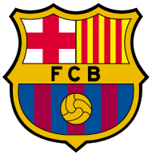

Hyperblog
tu blog de confianza xd
barcelona
mucho textico crack pero buéno vammo con toa, ishh mano esta re tarde no
no se que escribir
hijuesuputa mare

uy mano sera que con este cambio se arregla
es ta en una shingada purba mano a ver si le sale si no pss vale pinga
adivinanza: lana sube, lana baja, que es: una oveja en un asensor kjakjskajs
sus,sus,sus,cribete, y dale like pero sus,sus,sus,cribete
ejemplo para mostrár
el temon que es una prueba gil